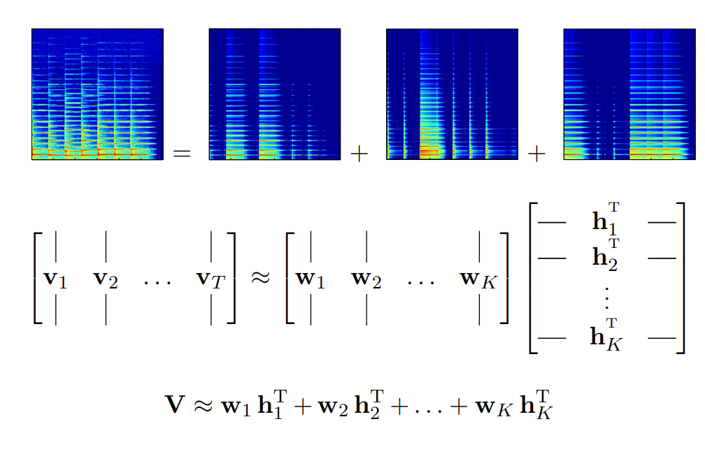

Introduction à la séparation de sources
ATIAM
matfontaine.github.io/MI205
Jeudi 18 Janvier 2024

Plan
Programme par tranche horaire (TH)
- I - Séparation de sources généralités
- II - Séparation de sources (ICA)
- III - Séparation de sources (mélange convolutif)
- IV - Espérance-Maximisation
- V - Factorisation de matrices non négatives (NMF)
- VI - Factorisation de matrices non négatives multicanal (MNMF)
I - Séparation de Sources : généralités
Séparation de sources en musique
Séparation de sources (général)
- Art d'estimer des signaux sources, souvent supposés indépendants, via l'observation d'un ou plusieurs mélanges de ces sources
Exemples d'applications
- Débruitage/séparation de locuteurs
- Séparation d'instruments de musique
Typologie des modèles de mélanges
Notations
- Observations: $M$ mélanges $x_m(t)$ concaténés dans un vecteur $\bold{x}(t)$
- inconnus: $N$ sources ponctuelles $s_n(t)$ concaténé dans un vecteur $\bold{s}(t)$
- Modèle de mélange général: Une fonction $\mathcal{A}$ qui transforme $\bold{s}(t)$ en $\bold{x}(t)$
Deux types
- mélange linéaire instantanée : $\bold{x}(t)=\bold{A}\bold{s}(t) \\ \quad\rightarrow \mathcal{A}$ est définie par la "matrice de mélange" $\bold{A}$ (de dimension $M\times N$)
- mélange convolutif : $x_m(t) = \sum_{n=1}^{N} a_{nm}(t) \star s_n(t)$
Vocabulaire
- mélanges déterminés : $M=N$
- mélanges surdéterminés : $M>N$
- mélanges sous-déterminés : $M < N$
Mélanges linéaires instantanées

Mélanges linéaires anéchoïques
Mélanges linéaires convolutifs
Vecteurs aléatoires
Notations
$\bold{x}$ est un vecteur aléatoire de dimension $M$.- les crochets $\phi[\bold{x}]$ dénotent une fonction de $p(\bold{x})$
- Moyenne : $\mu_{x}=\mathbb{E}[\bold{x}]$
- Matrice de covariance : $\Sigma_{xx}=\mathbb{E}[(\bold{x}-\mu_x)(\bold{x}-\mu_x)^\mathsf{H}]$
Vecteur gaussien complexe circulaire
- $\bold{x}$ où $\Re(\bold{x})$ et $\Im(\bold{x})$ sont gaussiens et $e^{i\phi}\bold{x} \overset{d}{=} \bold{x}, \forall \phi \in [0,2\pi[$
- Densité de probabilité (définie si $\Sigma_{xx}$ est inversible)
$$ p(\bold{x})=\frac{1}{\pi^{M}\det(\Sigma_{xx})} \exp((\bold{x}-\mu_x)^{\mathsf{H}}\Sigma_{xx}^{-1}(\bold{x} - \mu_x))$$ - On notera $\bold{x} \sim \mathcal{N}_{\mathbb{C}}^{M}(\mu_x, \Sigma_{xx})$ et $\bold{x} \sim \mathcal{N}_{\mathbb{C}}^{M}(\Sigma_{xx})$ si $\mu_x=0$
- Si $\mu_x=0$ $\implies$ vecteur gaussien complexe circulaire centré (GCCC)
II - Séparation de sources (ICA)
Séparation de sources aveugle (BSS) (1/2)
Modèle d'observation
- Mélange linéaire instantané :
$$\forall t, \bold{x}(t)=\bold{A}\bold{s}(t)$$ $\quad\rightarrow\bold{A}\in\mathbb{R}^{M\times K}$: "matrice de mélange" -
Les sources sont supposées iid. :
$$p(\{s_n(t)\}_{n,t})=\prod\limits_{n=1}^{N}\prod\limits_{t=1}^{T}p_n(s_n(t))$$
Problème de la BSS : estimer $\bold{A}$ et les $\bold{s}(t)$ étant donné $\bold{x}(t)$Séparation de sources aveugle (BSS) (2/2)
Non-mixing matrix
- Une matrice $\bold{C}$ de dimension $N\times N$ est non-mixing ssi. elle admet une unique entrée non-nulle pour chaque ligne et chaque colonne.
- Si $\tilde{\bold{s}}(t) = \bold{C}\bold{s}(t)$ et $\tilde{\bold{A}}=\bold{A}\bold{C}^{-1}$, alors $\bold{x}(t)= \tilde{\bold{A}}\tilde{\bold{s}}(t)$ est une autre décomposition admissible des observations. $\quad\rightarrow$ Les sources peuvent donc être estimé à une permutation et à un facteur multiplicatif près.
Séparation de sources linéaire
Model
-
Soit
$$\bold{y}(t)=\bold{B}\bold{x}(t)$$ $\quad\rightarrow\bold{B}\in\mathbb{R}^{N\times M}$: "matrice de séparation"
Faisabilité
- La séparation linéaire est faisable si $\mathrm{rank}(\bold{A})=N$
- Sous les conditions précédentes, on obtient :
$$\bold{B} = \begin{cases} \bold{B} = \bold{A}^{-1} & \mathrm{si} ~ M=N \\ \bold{B} = \bold{A}^{\dagger} = (\bold{A}^\top\bold{A})^{-1}\bold{A}^\top & \mathrm{si} ~ M>N \quad\quad \texttt{(pseudo-inverse)}\\ \emptyset & \mathrm{si} ~ M< N \end{cases} $$
Dans le cas de la BSS, la matrice $\bold{A}$ est inconnueIndepedent component analysis (ICA) (1/2)
Problem Statement
- $\bold{A}$ est inconnue et on cherche $\bold{B}$ qui rendent les $y_n(t)$ indépendants (ICA)
-
On obtient l'équation :
$$\bold{y}(t) = \bold{C}\bold{s}(t)$$ $\quad\rightarrow$ où $\bold{C}=\bold{BA}$ $\quad\rightarrow$ $\bold{C}$ est non-mixing $\implies$ le problème est résolu.

Indepedent component analysis (ICA) (2/2)
Théorème [d'identifiabilité]Soit $\{s_n(t)\}_{n=1\dots N}$ les $N$ sources iid., avec au plus une source Gaussienne et :$$ \bold{y}(t) = \bold{C}\bold{s}(t) $$ avec $\bold{C}$ inversible (i.e. $M \geq N$).Si les $y_n(t)$ sont indépendants, alors $\bold{C}$ est non-mixing
Blanchiment (1/3)
- Modèle :
$ \begin{cases} \mathbb{E}[\bold{s}(t)]=0 \\ \bold{R}_{ss}(\tau) = \mathbb{E}[\bold{s}(t+\tau)\bold{s}(t)^\top] = \mathrm{diag}(r_{s_k}(\tau)) \end{cases} \quad\texttt{(processus centrée SSL)} $ - Problème canonique (PC): on suppose que $\Sigma_{ss}=\bold{R}_{ss}(0)=\bold{I}$
-
Alors
$$ \Sigma_{xx} = \bold{A}\Sigma_{ss}\bold{A}^\top =\bold{A}\bold{A}^\top $$ $\quad\rightarrow$ $\bold{A}$ est une racine carré de la matrice $\bold{\Sigma}_{xx}$
Blanchiment (2/3)
Decorrelation (Blanchiment) de $\Sigma_{xx}$
-
$\Sigma_{xx}$ est diagonalisable dans une base orthonormée :
$$ \Sigma_{xx} = \bold{Q}\Lambda^2\bold{Q}^\top $$ $\quad\rightarrow \Lambda= \mathrm{diag}(\lambda_1, \dots, \lambda_M)$ avec $\lambda_1 \geq \dots \geq \lambda_N >\lambda_{N+1} = \dots =\lambda_{M} = 0$ $\quad\quad (\mathrm{rank}(\Sigma_{xx}) = N)$ - Soit $\bold{S} = \bold{Q}_{(:, 1:N)}\Lambda_{(1:N, 1:N)} \in \mathbb{R}^{M\times N}$ alors $\Sigma_{xx} = \bold{S}\bold{S}^\top$
-
Soit $\bold{W} = \bold{S}^{\dagger}, \bold{z}(t) = \bold{W}\bold{x}(t)$ alors :
$$ \begin{cases} \mathbb{E}[\bold{z}(t)] = 0, \\ \Sigma_{zz} = \bold{W}\Sigma_{xx}\bold{W}^\top = \bold{I} \end{cases}\quad\quad\texttt{(z est dit "blanc")} $$
Blanchiment (3/3)
Conclusion
- Sans perte de généralité : $\bold{U} := \bold{WA}$ est une matrice de rotation ($\bold{UU}^\top = \bold{I}$)
-
Alors :
$$ \bold{y}(t) = \bold{U}^\top \bold{z}(t) = \bold{U}^\top\bold{W}\bold{x}(t) = \bold{s}(t) $$ - On peut supposer que $\bold{B} = \bold{U}^\top\bold{W}$ où $\bold{U}$ est une matrice de rotation
- De plus $\forall \tau \in \mathbb{Z}, \bold{R}_{zz}(\tau) = \bold{U}\bold{R}_{ss}(\tau)\bold{U}^\top$
La diagonalisation jointe de $\bold{R}_{zz}(\tau)$ pour plusieurs $\tau$ va donner $\bold{U}$Diagonalisation jointe
Théorème [d'unicité de la diagonalisation jointe]Soit $\{\bold{R}_{zz}(\tau)\}_{\tau} \in \mathbb{R}^{N\times N}$ telles que :$$ \bold{R}_{zz}(\tau) = \bold{U}\bold{R_{ss}(\tau)}\bold{U}^\top $$ $\bold{U}$ est unique $\Leftrightarrow \forall 1\leq k \neq l \leq K~ \exists \tau, r_{s_k}(\tau) \neq r_{s_l}(\tau)$Méthode de diagonalisation jointe
- Minimiser : $J(\bold{U}) = \sum_\tau\mid\mid \bold{U}^\top\bold{R}_{zz}(\tau)\bold{U} - \mathrm{diag}(\bold{U}^\top\bold{R}_{zz}(\tau)\bold{U}) \mid\mid_{F}^2$
- Parametrisation de $\bold{U}$ comme des rotations de Givens et descente de gradient par coordonnées
- A. Belouchrani, "A blind source separation technique using second-order statistics," in IEEE TSP (1997)
Algorithme Second Order Blind Identification (SOBI)
- Estimation de $\Sigma_{xx}$
- Diagonalisation: $\Sigma_{xx} = \bold{Q}\Lambda^2\bold{Q}^\top$
- Calculer $\bold{S}=\bold{Q}_{(:, 1:K)}\Lambda_{(1:K, 1:K)}$ and $\bold{W}= \bold{S}^{\dagger}$
- Blanchiement des données : $\bold{z}(t) = \bold{W}\bold{x}(t)$
- Estimation de $\bold{R}_{zz}(\tau)$ pour différentes valeurs $\tau$
- Approximation de la diagonalisation jointe $\bold{R}_{zz}(\tau)$ dans une base commune $\bold{U}$
- Estimation des sources via $\bold{y}(t) = \bold{U}^{\top}\bold{z}(t)$
Exemple de SOBI sur différents mélanges (1/2)

Exemple de SOBI sur différents mélanges (2/2)

II/4 - Traitement du signal audio : séparation de sources (mélange convolutif)
Source images
Modèle de mélange instantané : non adapté aux mélanges réelsMélange de sources images
- Soit $\bold{x}_n(f,t) \in \mathbb{R}^M$ la source image de $s_n(f,t)$
$\quad\rightarrow$ on reçoit un signal multicanal ssi la source $s_n(f,t)$ est active - Modèle de mélange : $\bold{x}(f,t) = \sum_{k=1}^K \bold{x}_n(f,t)$
Décomposition du problème de séparation de sources
- Séparation : estimer $\bold{x}_n(f,t)$ à partir du mélange $\bold{x}(f,t)$
- Déconvolution : estimer $s_n(f,t)$ à partir de la source image $\bold{x}_n(f,t)$
Représentation temps-fréquence (TF)
Motivation
- Adéquat pour étudier les modèles convolutifs et/ou sous-déterminés
Banc de filtre de la TFCT
- Décomposition dans $F$ sous bandes et décimation en facteur $H \leq F$
- $H$ est appelée la hop-size
- filtres d'analyse $h_f$ et filtres de synthèses $g_f$
- Représentation TF du mélange : $x_m(f,t) = (h_f\ast x_m)(tH)$
- Reconstruction parfaite : $x_m(\tau) = \sum_{f=1}^F\sum_{t\in \mathbb{Z}} g_f(\tau-tH)x_m(f,t)$
Alors $\forall f,n ~ \bold{x}(f,t) = \bold{As}(f,t)\quad\texttt{(mélange linéaire instantané)}$Approche temps-fréquence
modèle de mélange et approximation à bande étroite
- $x_m(t) = \sum_{n=1}^{N}(a_{mn} \ast s_n)(t)$,
- La réponse impulsionnelle de $a_{mk}$ est courte p/r à la longueur de la fenêtre
- $\forall m,n,f, a_{mn}(\nu)$ varie lentement comparé à $h_f(\nu)$
Approximation du modèle de mélange convolutionnel
- $x_m(f,t)=\sum_{n=1}^N a_{mn}(f)s_n(f,t)$ i.e. $\bold{x}(f,t)=\bold{A}(f)\bold{s}(f,t)$
$\quad\rightarrow$ $F$ mélange de modèles instantanés dans chaque sous-bande fréquentielle
$\quad\rightarrow$ on peut utiliser une méthode d'ICA dans chaque sous-bande
Problème : si on utilise un algorithme de type ICA, on a une infinité de solutions (on doit constraindre le modèle)Indéterminations
Indéterminations (permutations et facteurs multiplicatifs) dans les matrices $\bold{C}(f)$- $\forall n$, identifier les index $n, f$ tel que $\forall f, y_{k_f}(f,t)=c_{k_f,k}s_k(f,t)$
- identifier les facteurs multiples $c_{k_f,k}$
Une infinité de solutions $\implies$ besoin de contraindre le modèleHypothèses sur le mélange ou les sources
- modèle continue le long de l'axe fréquentielle des $a_{mk}(f)$
$\quad\rightarrow$ modèle comme formation de voie ou modèle anéchoïque - similarité sur l'axe temporelle des $p_n(f,t)$ (ou modèle NMF. Plus tard ! )
Modèles continues de diffusion
Formation de voies
- Hypothèses : ondes planes, champ lointain, pas de réverbération, antenne linéaire
- Modèle : $a_{mn}(f)=e^{-2i\pi f\tau_{mn}}$ où $\tau_{mn}=\frac{d_m}{c}\sin(\Theta_n)$
- Paramètres : positions $d_m$ des capteurs et les angles $\Theta_n$ des sources
Modèle anéchoïque
- Hypothèses : source ponctuelle, pas de réverbération
- Modèle : $a_{mn}(f)=\alpha_{mn}e^{-2i\pi f\tau_{mn}}$ avec $\tau_{mn}=\frac{r_{mn}}{c}$ et $\alpha_{mn} = \frac{1}{\sqrt{4\pi}r_{mn}}$
- Paramètres : distances $r_{mn}$ entre les micros et les sources
Separation via un filtre non stationnaire
Considérons $\bold{y}(f,t) = \bold{B}(f,t)\bold{x}(f,t)$ où $\bold{B}(f,t) \in \mathbb{C}^{N\times M}$Estimation via l'erreur moyenne quadratique
- On cherche $\bold{B}(f,t)$ qui minimise $\mathbb{E}[\mid\mid\bold{y}(f,t)-\bold{s}(f,t)\mid\mid^2_{2} ]$
- Sol.: $\bold{B}(f,t) = \Sigma_{sx}(f,t)\Sigma_{xx}(f,t)^{-1}~\texttt{(Filtre de Wiener)}$
$\quad\rightarrow \Sigma_{xx}(f,t) = \bold{A}(f)\Sigma_{ss}(f,t)\bold{A}(f)^{\mathrm{H}}, \Sigma_{sx}(f,t) = \Sigma_{ss}(f,t)\bold{A}(f)^{\mathrm{H}} $ - $\bold{x}(f,t)=\bold{A}(f)\bold{y}(f,t)$ (reconstruction exacte)
cas particulier : cas monocanal
- sans perte de généralité, on définit $\bold{A}(f)=\left[\begin{array}{ccc} 1 & \dots & 1\\ 0 & \cdots & 0\\ \vdots & \cdots & \vdots \end{array}\right]$
- Alors $y_n(f,t) = \frac{p_n(f,t)}{\sum_{n^\prime=1}^Np_{n^\prime}(f,t)} x(f,t) ~~~~\texttt{(Filtre de Wiener monocanal)}$
Formalisme probabiliste pour la séparation de sources images
Prenons cette fois-ci le modèle de mélange de sources images :$$ \bold{x}(f,t) = \sum_{n=1}^{N}\bold{x}_n(f,t) $$ $\forall n,f,t$ indépendances et suivent une GCCC :$$ \bold{x}_n(f,t) \sim \mathcal{N}_{\mathbb{C}}^{M}(\Sigma_{n}(f,t)) $$ Alors, par indépendance et stabilité par sommation on a que :$$ \bold{x}(f,t) \sim \mathcal{N}_{\mathbb{C}}^{M}(\sum_{n=1}^{N}\Sigma_{n}(f,t) := \Sigma(f,t)) $$ On peut montrer que :$$ \bold{x}_n(f,t) \mid \bold{x}(f,t) \sim \mathcal{N}_{\mathbb{C}}^{M}(\mu_{\bold{x} \mid \bold{n}}, \Sigma_{\bold{x} \mid \bold{n}}) $$ avec$$\mu_{\bold{x} \mid \bold{n}} = \Sigma_{n}(f,t) \Sigma(f,t)^{-1}\bold{x}(f,t) ~~\texttt{(Filtrage de Wiener)}$$ $$\Sigma_{\bold{x} \mid \bold{n}} = \mu_{\bold{x} \mid \bold{n}}\mu_{\bold{x} \mid \bold{n}}^{\mathsf{H}} + (\bold{I_{M}} - \Sigma(f,t)^{-1})\Sigma_{n}(f,t) ~~\texttt{(covariance conditionnelle)}$$ En soit, le modèle probabiliste GCCR ou l'EMQ sont ici équivalents.IV - Espérance-Maximisation
Motivations, principe du maximum de vraisemblance
- On a maintenant des modèles pour l'audio (+ des connaissances en optimisation)
- Cependant pas d'estimation des paramètres
- Un modèle probabiliste a été cependant établi (modèle Gaussien)
Comment exploiter ce modèle pour estimer les matrices de covariances ?
$\rightarrow$ Idée : trouver les paramètres d'un modèle de probabilité les plus "vraisemblables" pour expliquer des données observées.- Dans notre cas, on avait $\bold{x}(f,t)$ des GCCC
- Notons $\bold{X} = \left\{\bold{x}(f,t)\right\}_{f,t=1}^{F,T}$ et $\Theta=\{\Sigma{(f,t)}\}_{f,t=1}^{F,T}$ les paramètres.
- Par indépendance $p(\bold{X}\mid \Theta) = \prod_{f,t=1}^{F,T} p(\bold{x}(f,t)\mid \Sigma(f,t))$
Ici on a le problème d'optimisation :
$$ \Theta^\star = \underset{\Theta}{\text{argmax}} \log(p(\bold{X}\mid \Theta)) $$ Ce problème est appelé le principe du maximum de (log)-vraisemblance (ML)Motivations, limites du modèle
On a cependant à faire à un certain nombre de limitations que voici:- Les paramètres que l'on cherche (considérés comme "cachés") sont également les $\Sigma_n(f,t)$
- Le problème d'optimisation précédent n'est pas forcément trivial à résoudre (non convexité etc.)
- En réalité, on a un échantillon TF pour estimer chaque $\Sigma_n(f,t)$ (on verra que la MNMF permet de résoudre se problème)
L'algorithme d'espérance-maximisation va nous permettre de résoudre partiellement les deux premiers points.Dans la suite, on notera $L(\Theta) = \log(p(\bold{X} \mid \Theta)$ (à noter que le log est une fonction croissante. donc cela ne change pas le problème)Espérance-Maximisation (EM) (1/4)
L'EM est un algorithme itératif qui met à jour les $\Theta$. Il permet d'effectuer la ML en présente de données cachées (latentes) $\bold{Z}$ ou de données manquantes.- Ces données cachées peuvent être définies pour une estimation des $\Theta$ plus accessible.
- On note $\Theta_n$ les paramètres estimés à l'itération $n$
- Comme on veut maximiser $L(\Theta)$, on voudrait une mise à jour des $\Theta$ tel que :
$$ L(\Theta) > L(\Theta_n) $$ - De manière équivalente, on veut maximiser la différence :
$$ L(\Theta) - L(\Theta_n) = \log(P(\bold{X} \mid \Theta)) - \log(P(\bold{X} \mid \Theta_n)) $$ -
La formule des probabilité totale nous permet d'écrire :
$$ L(\Theta) - L(\Theta_n) = \log\sum_{\bold{z} \in \bold{Z}} P(\bold{X} \mid \bold{z}, \Theta)P(\bold{z} \mid \Theta) - \log(P(\bold{X} \mid \Theta_n)) $$ - L'inégalité de Jensen ($\sum \lambda_i = 1, \lambda_i, \geq 0 \forall i, \log(\sum\lambda_i x_i) \geq \sum \lambda_i \log(x_i)$) s'applique ici (car les $\lambda_i = P(\bold{z} \mid \bold{X}, \Theta_n) \geq 0$ et $\sum_i \lambda_i = 1$)
Espérance-Maximisation (EM) (2/4)
En continuant de dérouler les calculs, on obtient : $$\begin{aligned} L(\Theta)-L\left(\Theta_n\right) & =\log \sum_{\mathbf{z}} \mathcal{P}(\mathbf{X} \mid \mathbf{z}, \Theta) \mathcal{P}(\mathbf{z} \mid \Theta)-\log \mathcal{P}\left(\mathbf{X} \mid \Theta_n\right) \\ & =\log \sum_{\mathbf{z}} \mathcal{P}(\mathbf{X} \mid \mathbf{z}, \Theta) \mathcal{P}(\mathbf{z} \mid \Theta) \cdot \frac{\mathcal{P}\left(\mathbf{z} \mid \mathbf{X}, \Theta_n\right)}{\mathcal{P}\left(\mathbf{z} \mid \mathbf{X}, \Theta_n\right)}-\log \mathcal{P}\left(\mathbf{X} \mid \Theta_n\right) \\ & =\log \sum_{\mathbf{z}} \mathcal{P}\left(\mathbf{z} \mid \mathbf{X}, \Theta_n\right)\left(\frac{\mathcal{P}(\mathbf{X} \mid \mathbf{z}, \Theta) \mathcal{P}(\mathbf{z} \mid \Theta)}{\mathcal{P}\left(\mathbf{z} \mid \mathbf{X}, \Theta_n\right)}\right)-\log \mathcal{P}\left(\mathbf{X} \mid \Theta_n\right) \\ & \geq \sum_{\mathbf{z}} \mathcal{P}\left(\mathbf{z} \mid \mathbf{X}, \Theta_n\right) \log \left(\frac{\mathcal{P}(\mathbf{X} \mid \mathbf{z}, \Theta) \mathcal{P}(\mathbf{z} \mid \Theta)}{\mathcal{P}\left(\mathbf{z} \mid \mathbf{X}, \Theta_n\right)}\right)-\log \mathcal{P}\left(\mathbf{X} \mid \Theta_n\right) \\ & =\sum_{\mathbf{z}} \mathcal{P}\left(\mathbf{z} \mid \mathbf{X}, \Theta_n\right) \log \left(\frac{\mathcal{P}(\mathbf{X} \mid \mathbf{z}, \Theta) \mathcal{P}(\mathbf{z} \mid \Theta)}{\mathcal{P}\left(\mathbf{z} \mid \mathbf{X}, \Theta_n\right) \mathcal{P}\left(\mathbf{X} \mid \Theta_n\right)}\right) \\ & := \Delta\left(\Theta \mid \Theta_n\right) \end{aligned}$$ Si on pose alors : $l (\Theta \mid \Theta_n) := \Delta\left(\Theta \mid \Theta_n\right) + L(\Theta_n)$. On a (et on peut montrer) :$$ L(\Theta) \geq l(\Theta \mid \Theta_n) \quad\text{et}\quad l(\Theta_n \mid \Theta_n) = L(\Theta_n) $$ Espérance-Maximisation (EM) (3/4)
- Rappel : On cherche $\Theta$ qui maximise $L(\Theta)$
- Quand $\Theta$ augmente $l(\Theta \mid \Theta_n)$, il augmente $L(\Theta)$
- L'algorithme EM alors cherche un $\Theta$ tel que $l(\Theta \mid \Theta_n)$ est maximum
- Cette nouvelle valeur est alors notée $\Theta_{n+1} :=\underset{\Theta}{\text{argmax}}(l(\Theta \mid \Theta_n))$
Illustration de l'algorithme EM. Espérance-Maximisation (EM) (4/4)
On peut alors montrer que :$$\begin{aligned} \Theta_{n+1} &:=\underset{\Theta}{\text{argmax}}(l(\Theta \mid \Theta_n)) \\ &= \underset{\Theta}{\text{argmax}}\left[\sum_{\bold{z}}P(\bold{z} \mid \bold{X}, \Theta_n)\log P(\bold{X},\bold{z} \mid \Theta)\right] \\ &= \underset{\Theta}{\text{argmax}}\left[\mathbb{E}_{\bold{Z} \mid \bold{X}, \Theta_n} \log(P(\bold{X},\bold{z} \mid \Theta))\right] \end{aligned} $$ On voit alors les deux étapes essentielles de l'algorithme EM apparaître :- $E$-step : Déterminer l'espérance conditionelle $\mathbb{E}_{\bold{Z} \mid \bold{X}, \Theta_n} \log(P(\bold{X},\bold{z} \mid \Theta))$
- $M$-step : Maximiser l'expression précédente en fonction de $\Theta$
En soit, on a "troqué" une maximisation de vraisemblance par celle d'une fonction $l$. L'idée est de proposer une fonction $l$ simple à maximiser et qui fait apparaître des variables latentes interprétables ou qui sont essentielles afin de résoudre le problème.- A. P. Dempster, N. M. Laird, and D. B. Rubin. Maximum likelihood from incomplete data via the EM algorithm. Journal of the Royal Statistical Society: Series B, 39(1):1–38, November 1977.
Application : famille exponentielle (1/3)
Supposons un jeu de données complet ($x_i, z_j$) i.i.d. de cardinal $N$ qui appartient à une famille exponentielle canonique :$$ P(x_i, z_j \mid \bold{\eta}) = h(x_i, z_j) e^{\bold{\eta}^\top T_{ij}(x_i, z_j) - A(\bold{\eta})} $$ On obtient alors :$$ P(\bold{X}, \bold{Z} \mid \bold{\eta}) = \prod_{i,j}h(x_i, z_j) e^{\bold{\eta}^\top T_{ij}(x_i, z_j) - A(\bold{\eta})} $$ L'espérance $\mathbb{E}_{\bold{Z} \mid \bold{X}, \eta_n} \log(P(\bold{X}, \bold{Z} \mid \bold{\eta})) = \sum_{i,j} \mathbb{E}_{z_i \mid x_i, \eta_n} \log(P(x_i, z_j \mid \eta))$ devient :$$ \begin{aligned} &\sum_{i,j} \mathbb{E}_{z_j \mid x_i, \eta_n} \log(P(x_i, z_j \mid \eta)) \\ &= \sum_{i,j} \mathbb{E}_{z_j \mid x_i, \eta_n} \left[\log(h(x_i, z_j)) + \bold{\eta}^\top [ T_{ij}(x_i, z_j)] - A(\bold{\eta})\right] \end{aligned} $$ La dérivation par rapport à $\eta$ et l'annulation du gradient implique que :$$ \sum_{i,j} \mathbb{E}_{z_j \mid x_i, \eta_n}[T_{ij}(x_i, z_j)] = N\frac{\partial A(\eta)}{\partial \eta} $$ Remarque : L'étape E revient alors à calculer les espérances conditionnelles des $T_{ij}$.Application : famille exponentielle (2/3)
Prenons un modèle de mélange simple monocanal$$x(f,t) = \sum_{n=1}^{N} s_n(f,t)$$ où toutes les variables sont indépendantes et $s_n(f,t) \sim \mathcal{N}_{\mathbb{C}}(\sigma^2_n(f,t))$ . On peut montrer que $P\left(\boldsymbol{X},\boldsymbol{s}\mid\Theta\right)$ est une famille exponentielle (car gaussienne) avec$$T_n(f,t) = (\bold{y}_n(f,t), \bold{y}_n(f,t)\bold{y}_n(f,t)^\top)^\top$$ où $\bold{y}_n(f,t) = [s_n(f,t), x(f,t)]^\top$ Dans ce cas précis (comme il s'agit des espérances conditionnelles) l'étape E se réduit au final à déterminer les espérances et variances conditionnelles ($\hat{s}_n(f,t),\sigma^2_{n\mid x}(f,t)$). On a donc :$$\begin{aligned} \hat{s}_n(f,t) &= \frac{\sigma_n^2(f,t)}{\sum_{n^\prime=1}^{N}\sigma_{n^\prime}^2(f,t)}x(f,t) \\ \sigma_{n \mid x}(f,t) &= \hat{s}_n(f,t)\hat{s}^{\star}_n(f,t) + \left(1- \frac{\sigma_n^2(f,t)}{\sum_{n^\prime=1}^{N}\sigma_{n^\prime}^2(f,t)}\right)\sigma_n^2(f,t) \end{aligned} $$ Application : famille exponentielle (3/3)
L'étape M revient donc à calculer les dérivées partielles par rapport aux $\sigma_n(f,t)$. On obtient au final tout simplement :$$\begin{aligned} \sigma_n^2(f,t) = \sigma_{n \mid x}^2(f,t) \end{aligned} $$ Pour résumer on pourrait avoir l'algorithme suivant :[Algorithme de séparation "naïf" EM]- Entrées
- Données observées $\bold{X}$
- Nombre d'itérations $I$ de l'algorithme EM
-
Initialisation
- Initialiser les $\sigma^2_{n, (0)}(f,t), \forall n,f,t$
-
Algorithme EM pour $i=1, \dots, I$
- Etape-E en calculant $\hat{s}_{n, (i)}(f,t)$ et $\sigma_{n \mid x, (i)}^2(f,t)$
- Etape-M (un peu inutile ici ...) on a $\sigma_{n,(i)}^2(f,t) = \sigma_{n \mid x, (i)}^2(f,t)$
En pratique, il faut initialiser les variances... (Dans le cas du débruitage, l'énergie du bruit peut être initialisé via un détecteur d'activité vocal)Méthodes inspirées de l'algorithme EM (1/2)
Algorithme de maximisation-minimisation
Purement un problème d'optimisation itératif. Problème trop compliqué, alors on prend une fonction concave.
- Soit $f(\Theta)$ la fonction à majorer
- On construit $g(\Theta \mid \Theta_i)$ concave à chaque iteration qui va minorer $f(\theta)$ comme suit :
$$ \begin{aligned} g(\Theta \mid \Theta_i) &\leq f(\Theta),~ \forall \Theta \\ g(\Theta_i \mid \Theta_i) &= f(\Theta_i) \end{aligned} $$ - On maximise alors $g$ : $\Theta_{i+1}=\underset{\Theta}{\text{argmax }} g(\Theta \mid \Theta_i)$
- Remarquons que $f(\Theta_{i+1})\geq f(\Theta_{i})$
- Kenneth Lange: "MM Optimization Algorithms", SIAM, ISBN 978-1-611974-39-3 (2016)
Méthodes inspirées de l'algorithme EM (2/2)
Méthode de la fonction auxiliaire
- On cherche à résoudre : $\Theta^\star = \underset{\Theta}{\text{argmin }}J(\Theta)$
- On prend une fonction auxiliaire $Q(\Theta, \tilde{\Theta})$ tel que :
$\quad \rightarrow J(\Theta) = \underset{\tilde{\Theta}}{\min~}Q(\Theta, \tilde{\Theta})$
$\quad Q(\Theta, \Theta) = J(\Theta)$ - On minimise alors alternativement les $\Theta$ et $\tilde{\Theta}$ :
$\quad \rightarrow \tilde{\Theta}^{(i+1)}= \underset{\tilde{\Theta}}{\text{argmin }}Q(\Theta^{(i)}, \tilde{\Theta})$
$\quad \rightarrow \Theta^{(i+1)} = \underset{\Theta}{\text{argmin }}Q(\Theta, \tilde{\Theta}^{(i+1)})$ - Dans ce cas là, on a également que $Q(\Theta, \tilde{\Theta}) \geq J(\Theta)$.
Utilisation d'un exemple concret en séparation de sources sonores ?- Lee, D., & Seung, H. S. (NEURIPS, 2000). Algorithms for non-negative matrix factorization. .
AuxIVA (Auxiliary Independent component analysis) (1/2)
- On reprend le modèle convolutif avec l'approximation en bande étroite :
$$ \bold{x}(f,t) = A(f)\bold{s}(f,t) $$ - On cherche $W(f)=[\bold{w}_1(f), \dots, \bold{w}_N(f)]$ tel que $\bold{y}(f,t) = W(f)\bold{x}(f,t)$ avec $\bold{y}(f,t) = [y_1(f,t), \dots, y_n(f,t)]^\top$
- On suppose les vecteurs $\bold{y}_n^{(t)} = [y_n(1,t), \dots, y_n(F,t)]^\top$ indépendants (IVA)
- La fonction de coût du problème est définie par
$$J_t(W) = \sum_{n=1}^{N} \mathbb{E}[-\log P(\bold{y}_n^{t})] - \sum_{f=1}^{F} \log \left|\det W(f) \right|$$ -
Le modèle employé pour les $\bold{y}_n^{t}$ sont les modèles sphériques gaussiens :
$$ P(\bold{y}_n^{t}) = \frac{1}{\pi^F (r_n^{(t)})^F}e^{-\frac{||\bold{y}_n^{(t)}||^2}{r_n(t)}} $$ - La fonction auxiliaire $Q(\bold{W}, \bold{V})$ est alors
$$ Q(\bold{W}, \bold{V}) = \sum_{n,f=1}^{N,F}\bold{w}_{n}(f)\mathbb{E}[\frac{-\log P(||\bold{y}_n^{(t)}||^2)^{\prime}}{r_n^{(t)}}] \bold{w}_{n}^\mathsf{H}(f)^ - \log|\det(W(f))| + C $$
Au final, on dérive par rapport aux variables souhaitées et aux variables auxilaires pour obtenir l'algorithme suivant (avec $\bold{e}_n = [0, \dots, \underbrace{1}_{\text{n ème position}}, 0,\dots, 0]^\top$) : [Algorithme AuxIVA]- Entrées
- Données observées $\bold{X}$
- Nombre d'itérations $I$ de l'algorithme itératif
-
Initialisation
- Initialiser les $W(f), \forall n,f,t$
-
Algorithme itératif pour $i=1, \dots, I$
- mise à jour des $r_n^{(t)} = \sqrt{\sum_{f=1}^{F}|\bold{w}_{n}^\mathsf{H}(f)\bold{x}(f,t)|}$
- mise à jour des $V_n(f) = \mathbb{E}[\frac{-\log P(||\bold{y}_n^{(t)}||^2)^{\prime}}{r_n^{(t)}}]$
- mise à jour des $\bold{w}_n(f) = (W(f)V_n(f))^{1}\bold{e}_n$
- mise à jour des $\bold{w}_n(f) = \frac{\bold{w}_n(f)}{\sqrt{\bold{w}_n(f)^\mathsf{H}V_n(f)\bold{w}_n(f)}}$
- Ono, N. Stable and fast update rules for independent vector analysis based on auxiliary function technique. WASPAA (2011)
Exemple d'AuxIVA
V - Factorisation de matrices non négatives (NMF)
Introduction
- Technique très populaire pour l'analyse de données
- Très employé (+ de 7000 citations pour le papier original)
- Utilisables dans pleins de domaines (audio, computer vision, système de recommendations etc.)
- Lee, D., Seung, H. ”Learning the parts of objects by non-negative matrix factorization.” Nature vol. 401, pp. 788–791 (1999).
Application en audio ?
- Séparation de sources sonores
- Restauration de fichiers audios
- Transcription musicale
Idée générale de la NMF (1/2)
- Soit $V$ une matrice avec des coefficients $\geq 0$
- On veut décomposer $V$ comme un produit de matrice non négative $W$ et $H$ de rang plus faible :
$$ V \approx WH $$ Idée générale de la NMF (2/2)
- Autre point de vue : décomposition en pleins de matrices de rang $1$ et sommation
- Un piano qui joue c'est plusieurs notes qui s'activent au cours du temps
$$ V \approx WH $$ NMF en audio (1/6)
NMF en audio (2/6)
NMF en audio (3/6)
NMF en audio (4/6)
NMF en audio (5/6)
 NMF en audio (6/6)
- Exemple sur un Piano
- $W$: dictionnaire de notes
- $H$: activation des notes
Exemples d'applications (1/3)
- Ici, si $W$ représente les notes. Alors $H$ est transcription approximative.
Exemples d'applications (2/3)
- Séparation de sources
Exemples d'applications (3/3)
- Restauration de fichiers audios
- On utilise $W$ et/ou $H$ pour la restauration
Comment estime-t-on $W$ et $H$ ?Résolution du problème
- On cherche $W$ et $H$ telle que l'erreur
d'une certaine metrique soit minimisé entre $V$ et $WH$ :
$$ \underset{W \geq 0,H \geq 0}{\min}d(V \mid WH) $$ - Ces distances sont plutôt coordonnées par coordonnées : $$d(V \mid WH) = \sum_{f,t=1}^{F,T} d (v_{ft} \mid \sum_{k=1}^{K}w_{fk}h_{kt})$$
- $||V-WH||^2$ la distance euclidienne.
- $V\log\frac{V}{WH} - V + WH$: la divergence de Kullback-Leibler
- $\frac{V}{WH} - \log(\frac{V}{WH}) -1$ : la divergence d'Itakura-Saito
On se concentra ici sur la divergence de Kullback-LeiblerRésolution du problème
- Soit $V=\{v_{ft}\}_{f,t=1}^{F,T}, W=\{w_{fk}\}_{f,k=1}^{F,K}, H=\{h_{kt}\}_{k,t=1}^{K,T}$
- On calcule simplement les dérivées partielles $\frac{\partial}{\partial w_{fk}}$ et $\frac{\partial}{\partial h_{kt}}$
- Soit on fait une descente du gradient $w_{fk}^{(i)} \leftarrow w_{fk}^{(i-1)} - \eta \nabla w_{fk}^{(i-1)}$
- Soit on regarde l'annulation du gradient et on obtient les mises à jours suivantes:
$$W \leftarrow W \circ \frac{\frac{V}{WH}H^\top}{\bold{1}H^\top}$$ $$H \leftarrow H \circ \frac{W^\top\frac{V}{WH}}{W^\top\bold{1}}$$ - $\circ$ : produit terme à terme
- $\frac{.}{.}$ : division terme à terme
- $\bold{1}$ : matrice remplie de $1$ (afin d'avoir la bonne dimension)
Algorithme NMF en audio (avec divergence de Kullback-Leibler)
Algorithme KL-NMF- Entrées
- Données observées $\bold{X}$
- Nombre d'itérations $I$ de l'algorithme itératif
-
Initialisation
- Initialiser les matrices $W,H, \forall n,f,t$
- Calculer $V = |X|^2$ (spectrogramme de puissance)
-
Algorithme itératif pour $i=1, \dots, I$
- mise à jour $W \leftarrow W \circ \frac{\frac{V}{WH}H^\top}{\bold{1}H^\top}$
- mise à jour des $H \leftarrow H \circ \frac{W^\top\frac{V}{WH}}{W^\top\bold{1}}$
Comment reconstruire le signal après estimation de $W$ et $H$?Reconstruction des sources
- On utilise le filtrage de Wiener comme suit:
$$x_{kft} = x_{ft} \frac{w_{fk}h_{kt}}{\sum_{k^\prime=1}^{K}w_{fk^\prime}h_{k^\prime t}}$$ - En matriciel, cela donne:
$$\bold{X}_k = \bold{X} \circ \frac{\bold{W}(:,k)\bold{H}(k, :)}{\bold{W}\bold{H}}$$
VI - Factorisation de matrices non négatives multicanal (MNMF)
Motivations
- Séparation de sources en multicanal même dans le cas sous-déterminé ($M < N$)
- En considérant plusieurs sources polyphoniques (NMF)
- Combinaison de modèle multicanal + NMF $\implies$ MNMF
- On étudie alors des tenseurs de taille $ M \times F \times T$
Modèle de mélange convolutif bruité + NMF
- On reprend un modèle de mélange convolutif avec approximation par
bande étroite de $N$ sources dans le domaine temps-fréquence à laquelle on
ajoute un bruit gaussien décorrélé et stationnaire :
$$ \bold{x}(f,t) = \bold{A}(f)\bold{s}(f,t) + \bold{b}(f,t) $$ - Chaque entrée $s_n(f,t)$ de $\bold{s}(f,t)=[s_1(f,t), \dots, s_N(f,t)]^\top \in \mathbb{C}^{N}$ est indépendante des autres tel que :
$$ p_n(f,t) = \mathbb{E}(|s_n(f,t)|^2) \qquad\texttt{(Spectrogramme de Puissance)} $$ Enfin, $\bold{b}(f,t) \sim \mathcal{N}_{\mathbb{C}}^{M}(\text{diag}[\sigma^2_{m}(f)]_{m=1}^{M}\triangleq \Sigma_{b,f})$. On note $\Sigma_{n,ft}=\text{diag}([p_n(f,t)]_{n=1}^{N})$ -
Chaque source admet une décomposition NMF régie par le modèle suivant
$$s_n(f,t) = \sum_{k \in \mathcal{K}_n} c_{k}(f,t) \quad \quad c_{k}(f,t) \sim \mathcal{N}_{\mathbb{C}}(w_{k}(f)h_{k}(t))$$ Avec $\mathcal{K}_n$ le nombre de composantes latentes (e.g. notes) associée à la source $n$.
Estimation des paramètres via l'algorithme EM ?- A. Ozerov and C. Fevotte, "Multichannel Nonnegative Matrix Factorization in Convolutive Mixtures for Audio Source Separation,", TASLP. 2010.
Log de Vraisemblance complète
- Comme précédemment dans le cas gaussien monocanal, on prend en compte les données complètes $P(\bold{X}, \bold{C} \mid \Theta)$ avec $\bold{X} = \{\bold{x}(f,t)\}_{f,t=1}^{F,T}, \bold{C} = \{c_{kn}(f,t)\}_{n,f,t,k=1}^{N,F,T,K}$ et $\bold{\Theta}=\{\Sigma_{b,f}, \bold{A}(f), w_k(f), h_k(t)\}_{f,t,k=1}^{F,T,K}$.
- Le calcul (en considérant $-\log P(\bold{X},\bold{S} \mid \bold{\Theta})$) revient à faire :
$$ -\log P(\bold{X},\bold{S} \mid \bold{\Theta}) = -\log P(\bold{X} \mid \bold{S}, \bold{\Theta}) -\log P(\bold{S} \mid \bold{\Theta}) $$ - On peut démontrer que (en omettant les constantes dépendant de $\pi$) :
$ \begin{aligned} -\log P(\bold{X}\mid \bold{S} , \bold{\Theta}) &= \sum_{f,t=1}^{F,T} \log \det \Sigma_{b,f} + \left(\bold{x}(f,t)-\bold{A}(f)\bold{s}(f,t)\right)^\mathsf{H}\Sigma_{b,f}^{-1}\left(\bold{x}(f,t)-\bold{A}(f)\bold{s}(f,t)\right) \\ -\log P(\bold{S} \mid \bold{\Theta}) &= \sum_{k,f,t=1}^{\mathcal{K},F,T}\left(\log(w_k(f)h_k(t))) + \frac{|c_k(f,t)|^2}{w_k(f)h_k(t)}\right) \end{aligned} $ - En utilisant la "technique de la trace" et en simplifiant on a :
$ \begin{aligned} -\log p(\bold{X}, \bold{S} \mid \bold{\Theta}) = <\eta(\bold{\Theta}),\bold{T}(\bold{X},\bold{S})> + \nu(\bold{\Theta}) \end{aligned} $ Avec $\bold{T}(\bold{X}, \bold{S})$ les statistiques naturelles d'une gaussienne.
Une nouvelle fois, on a une famille exponentielle.Etape E
- Les statistiques suffisantes des données $(\bold{X}, \bold{S})$ sont $\{\bold{R}_{xx,f}, \bold{R}_{xs,f}, \bold{R}_{ss,f}, u_k(f,t) = |c_k(f,t)|^2\}$ où $ \bold{R}_{de,f} =\frac{1}{T}\sum_{t}\bold{d}(f,t)\bold{e}(f,t)^{\mathsf{H}}$
- On doit calculer les espérances $\mathbb{E}_{\bold{S} \mid \bold{X},\bold{\Theta}_i}$ des statistiques suffisantes :
$\begin{aligned} \mathbb{E}_{\bold{S} \mid \bold{X},\bold{\Theta}_i}[\bold{R}_{xx,f}] &= \hat{\bold{R}}_{xx,f} = \frac{1}{T}\sum_{t=1}^{T}\bold{x}_{ft}\bold{x}_{ft}^{\mathsf{H}} \\ \mathbb{E}_{\bold{S} \mid \bold{X},\bold{\Theta}_i}[\bold{R}_{xs,f}] &= \hat{\bold{R}}_{xs,f} = \frac{1}{T} \sum_{t=1}^{T}\bold{x}(f,t)\hat{s}^{\mathsf{H}}_{(i)}(f,t)\\ \mathbb{E}_{\bold{S} \mid \bold{X},\bold{\Theta}_i}[\bold{R}_{ss,f}] &= \hat{\bold{R}}_{ss,f} = \frac{1}{T}\sum_{t=1}^{T}\hat{s}_{(i)}(f,t)\hat{s}^{\mathsf{H}}_{(i)}(f,t) + (\bold{I} - \bold{W}_s(f,t)\bold{A}(f))\Sigma_{s, ft} \\ \mathbb{E}_{\bold{S} \mid \bold{X},\bold{\Theta}_i}[u_k(f,t)] &= \hat{u}_{k}(f,t) = [\hat\bold{c}_{(i)}(f,t)\hat\bold{c}_{(i)}(f,t)^\mathsf{H} + (\bold{I} - \bold{W}_{c}(f,t)\bold{A}(f))\Sigma_{c,ft}]_{k,k} \end{aligned} $ Etape M
En dérivant la somme des espérances conditionnelles précédentes par rapport aux paramètres à updater, on obtient : $\begin{aligned} \bold{A}(f) &= \hat{\bold{R}}_{xs,f}\hat{\bold{R}}_{ss,f}^{-1} \\ \Sigma_{b,f} &= \text{Diag}\left(\hat{\bold{R}}_{xx,f} - \bold{A}(f)\hat{\bold{R}}^{\mathsf{H}}_{xs,f} - \hat{\bold{R}}_{xs,f}\bold{A}(f)^{\mathsf{H}} + \bold{A}(f)\hat{\bold{R}}_{ss,f}\bold{A}(f)^{\mathsf{H}}\right) \\ w_k(f) &= \frac{1}{T}\sum_{t}\frac{\hat{u}_{k}(f,t)}{h_k(t)}; \qquad h_k(t) = \frac{1}{F}\sum_{f}\frac{\hat{u}_{k}(f,t)}{w_k(f)} \end{aligned} $Reconstruction des sources
- Une fois l'algorithme EM effectué et les paramètres estimés, on effectue un filtrage de Wiener multicanal :
$$\bold{s}_{n}(f,t) = \bold{W}_n(f,t)\bold{x}(f,t)$$
Cette approche est cependant gourmande en temps de calcul. Autre approche ?Minimisation de la somme des canaux
- Les $\bold{X}= \{x_{m}(f,t)\}_{f,t,m=1}^{F,T,M}$ forment un tenseur.
- En considérant tous leurs spectrogrammes de puissance, on peut prendre en compte une factorisationen tenseur non-négatif (NTF)
- pour une valeur du spectrogramme de puissance (SP) $\hat{p}_m(f,t)$ du mélange on écrit :
$$ \hat{p}_m(f,t) = \sum_{n,k=1}^{N,K} q_{nm}(f)w_f(k)h_k(t) $$ - Ainsi le SP du mélange et la $\sum$ des SP des sources pondéré par un scalaire lié à chaque microphone et fréquence.
- Ici, il est proposer de minimiser les divergence d'Itakura-Saito suivante avec $\Theta = \{\bold{Q}, \bold{W}, \bold{H}\}$ :
$$ d_{IS}(\bold{X} \mid \Theta) = \sum_{m,f,t = 1}^{M, F, T}d_{IS}(p_m(f,t) := |x_m(f,t)|^2 \mid \hat{p}_m(f,t)) $$
Le problème est bien plus simple à résoudre ! (Mais les hypothèses plus fortes)Mise à jour des paramètres
Si on dérive par rapport aux paramètres et qu'on regarde quand le gradient s'annule, on obtient les mises à jour suivantes :$\begin{aligned} \bold{q}_{mn} &\leftarrow \bold{q}_{mn} \circ \frac{\left[\hat{\bold{P}}_{m}^{\circ -2} \circ \bold{P}_{m} \circ (\bold{W}_{n}\bold{H}_{n})\right]\bold{1}_{T \times 1}} {\left[\bold{P}_{m}^{\circ -1} \circ (\bold{W}_{n}\bold{H}_{n})\right]\bold{1}_{T \times 1}} \\ \bold{W}_n &\leftarrow \bold{W}_n \circ \frac{\sum_{m=1}^{M}\text{diag}(\bold{q}_{nm})\left(\hat\bold{P}_{m}^{\circ -2} \circ \bold{P}_{m}\right)\bold{H}^\top_n} {\sum_{m=1}^{M}\text{diag}(\bold{q}_{nm})\hat\bold{P}_{m}^{\circ -1} \bold{H}^\top_n} \\ \bold{H}_n &\leftarrow \bold{H}_n \circ \frac{\sum_{m=1}^{M}\left(\text{diag}(\bold{q}_{nm})\bold{W}_{n}\right)^\top\left(\hat\bold{P}_{m}^{\circ -2} \circ \bold{P}_{m}\right)} {\sum_{m=1}^{M}\left(\text{diag}(\bold{q}_{nm})\bold{W}_{n}\right)^\top\hat\bold{P}_{m}^{\circ -1} } \end{aligned}$ Résumé
- On a vu, deux approches MNMF :
$\quad \rightarrow$ La première est basée sur l'utilisation d'un modèle convolutif + développer un algorithme EM
$\quad \rightarrow$ La seconde cherche à minimiser une divergence point par point entre le spectrogramme de puissance du mélange et un modèle NTF. -
Globalement les avantages et inconvénient sont :
$\quad \rightarrow$ (EM) : compliqué à dériver et lourd en calcul mais précis
$\quad \rightarrow$ multiplicative update (MU) : simple à dériver mais des hypothèses fortes (distance point par point qui ne prend pas totalement en compte l'inter corrélation entre les microphones)
Modèle de diffusion
Soit $s_n(f,t)$ une source ponctuelle et $s_n(f,t,\psi)$ avec $\psi \in \Psi_n$ une source diffuse. On note par ailleurs, $\bold{y}_n(f,t)=[y_{1n}(f,t), \dots, y_{Mn}(f,t)]^\top$ la source image captée par les $M$ microphones.- $\Psi_n$ est l'aire où se trouve la source (elle n'est pas forcément ponctuelle).
- dans le cas ponctuel, on rappelle que l'approximation à bande étroite donne :
$$ \bold{y}_n(f,t) = \bold{a}_n(f)s_n(f,t) $$ où $\bold{a}_{n}(f) \in \mathbb{C}^M$. -
avec un modèle de diffusion, on aura plutôt une contribution pour tous les points de $\Psi_n$ i.e.:
$$ \bold{y}_{n}(f,t) = \int_{\psi \in \Psi_n} s(f,t,\psi)\bold{a}_{n\psi}(f)d\psi $$
Comment exploiter ce modèle de diffusion ?Hypothèse et matrice de covariance spatiale
Supposons que les $s_n(f,t,\psi) \sim \mathcal{N}_{\mathbb{C}}^1 (0, p_n(f,t))$. On regarde alors la matrice de covariance des $\bold{y}_{n}(f,t)$ :$$ \mathbb{E}[\bold{y}_n(f,t)\bold{y}_n(f,t)^\mathsf{H}]=\int_{\psi \in \Psi_n}\mathbb{E}[s(f,t,\psi)s(f,t,\psi)^\star]\bold{a}_{n\psi}(f)\bold{a}_{n\psi}(f)^\mathsf{H}d\psi $$ Cependant, les $s(f,t,\psi)$ ont même distribution: $$ \quad \rightarrow \mathbb{E}[s(f,t,\psi)s(f,t,\psi)^\star] = p_n(f,t) \geq 0 $$Donc finalement : $$ \begin{aligned} \mathbb{E}[\bold{y}_n(f,t)\bold{y}_n(f,t)^\mathsf{H}] &= p_n(f,t)\int_{\psi \in \Psi_n}\underbrace{\bold{a}_{n\psi}(f)\bold{a}_{n\psi}(f)^\mathsf{H}}_{\in \mathbb{C}^{M\times M}}d\psi \\ &= p_n(f,t)\bold{R}_n(f) \end{aligned} $$
La matrice $\bold{R}_n(f)$ est appellée la matrice de covariance spatiale. Elle représente le chemin acoustique entre chaque point qui constitue la source et chaque microphone. Le scalaire $p_n(f,t)$ peut-être vu comme le spectrogramme de puissance.Modèle spatial
Ainsi, nos sources images $\bold{y}_n(f,t)$ sont supposés admettre le modèle GCCC suivant :$$ \bold{y}_n(f,t) \sim \mathcal{N}_{\mathbb{C}}^M(0,p_n(f,t)\bold{R}_n(f)) $$ Si on rajoute le modèle de mélange $\bold{x}(f,t) = \sum_{n=1}^{N}\bold{y}_n(f,t)$ et que toutes les sources sont indépendantes $\forall n,f,t,$ on a :$$ \bold{x}(f,t) \sim \mathcal{N}_{\mathbb{C}}^M(0,\sum_{n=1}^{N}p_n(f,t)\bold{R}_n(f)) $$ Mélange convolutif
- Si on suppose que les $\bold{R}_n(f) = \bold{a}_n(f)\bold{a}_n^\mathsf{H}(f)$ sont de rang $1$ alors :
$$ \bold{x}(f,t) = \sum_{n=1}^{N}\bold{a}_n(f)s_n(f,t) = \bold{A}(f)\bold{s}(f,t) $$ Où les $s_n(f,t) \sim \mathcal{N}_{\mathbb{C}}^{M}(0,p_n(f,t))$
Sous ces contraintes, comment estimer les paramètres ?- N. Q. K. Duong, E. Vincent and R. Gribonval, "Under-Determined Reverberant Audio Source Separation Using a Full-Rank Spatial Covariance Model," IEEE TASP. 2010.
Algorithme EM pour la séparation de sources du modèle spatial non contraint (1/2)
- Nous allons refaire appel à l'algorithme EM
- Soit $\bold{R}_n(f,t) = p_n(f,t)\bold{R}_{n}(f)$, $\bold{R}(f,t) = \sum_{n=1}^{N}\bold{R}_{n}(f,t)$, $\bold{\Theta} = \{p_n(f,t), \bold{R}_{n}(f)\}_{n,f,k,t = 1}^{N, F, K, T}$ et $\bold{X} = \{\bold{x}_{ft}\}_{f,t = 1}^{F,T}$.
- On peut alors montrer, comme dans le cas Gaussien monocanal, que $P(\bold{X}, \bold{Y} \mid \bold{\Theta})$ est une famille exponentielle.
- L'étape $E$ se résume alors à estimer l'éspérance conditionelle
$\hat\bold{y}_n(f,t)=\mathbb{E}[\bold{y}_n(f,t) \mid \bold{x}(f,t)]$ et la variance conditionnelle $\hat\bold{R}_{n}(f,t)=\text{Var}[\bold{y_n}(f,t) \mid \bold{x}(f,t)]$. On retombe à nouveau
sur un filtrage de Wiener et la variance conditionnelle d'une Gaussienne :
$ \begin{aligned} \bold{W}_n(f,t) &= \bold{R}_{n}(f,t)\bold{R}^{-1}(f,t) \quad \quad \texttt{(Masque de Wiener)}\\ \hat\bold{y}_n(f,t) &= \bold{W}_n(f,t)\bold{x}(f,t) \\ \hat\bold{R}_n(f,t) &= \hat\bold{y}_n(f,t)\hat\bold{y}^{\mathsf{H}}_n(f,t) + (\bold{I}_{M} - \bold{W}_n(f,t))\bold{R}_{n}(f,t) \end{aligned} $
Algorithme EM pour la séparation de sources du modèle spatial non contraint (2/2)
- Un calcul assez laborieux des dérivées le long de $p_n(f,t)$ et $\bold{R}_n(f,t)$ nous donne :
$\begin{aligned} p_n(f,t) &= \frac{1}{M}\text{Tr}(\bold{R}_{n}^{-1}(f)\hat\bold{R}_n(f,t)) \\ \bold{R}_{n}(f) &= \frac{1}{M} \sum_{t=1}^{T}\frac{\hat\bold{R}_n(f,t)}{p_n(f,t)} \end{aligned} $
Remarque : Comme il s'agit de la somme de matrice de rang $1$, on peut aisément supposer les $\bold{R}_{n}(f)$ de rang plein.
Version avec un modèle NMF + MU ?Divergence d'Itakura-Saito et NLL Gaussienne (1/2)
Disgression : cas monocanal
- Prenons $\bold{X} = \{x(f,t)\}_{f,t=1}^{F,T}$ les observations et $\Theta = \{w_k(f), h_k(t)\}_{f,k,t=1}^{F,K,T}$ les paramètres. On suppose que les entrées indépendantes et $x(f,t) \sim \mathcal{N}_{\mathbb{C}}(\sum_{k=1}^{K}w_k(f)h_k(t))$.
-
Les paramètres à optimiser sont uniquement les $w_k(f)$ et $h_k(t)$. Le reste sera "spdg" appellée "constante"
(la dérivation n'influencera pas l'estimation des paramètres).
$\quad \rightarrow$ On notera notamment $\overset{c}{=}$ qui signifie "égal à une constante additive près" -
Si on regarde $-\log p(\bold{X} \mid \bold{\Theta})$ alors on peut prouver que :
$$ -\log p(\bold{X} \mid \bold{\Theta}) \overset{c}{=} \sum_{f,t=1}^{F,T} d_{\text{IS}}(|x(f,t)|^2 \mid \sum_{k=1}^{K}w_k(f)h_k(t)) $$ Où $d_{IS}(x \mid y) = \frac{x}{y} - \log\frac{x}{y} -1$
Dans le cas monocanal, minimiser la NLL est équivalent à minmiser la $d_{IS}$. Mais quel est le lien exact entre les deux ?Divergence d'Itakura-Saito et NLL Gaussienne (2/2)
- Posons pour alléger $\tilde{x}(f,t) = |x(f,t)|^2$ et $\hat{x}(f,t) = \sum_{k=1}^{K}w_k(f)h_k(t)$
- On peut alors montrer que (les densités ici sont toutes gaussiennes) :
$$ d_{\text{IS}}(|x(f,t)|^2 \mid \hat{x}(f,t)) = \log P(x(f,t) \mid \tilde{x}(f,t)) - \log P(x(f,t) \mid \hat{x}(f,t)) $$
Extension au cas multicanal
Maintenant, dans le cas multicanal considérons un modèle avec une covariance spatiale latente (diffusion des sources latentes) :- Soit $\hat\bold{X}(f,t) = \sum_{k=1}^{K}\bold{R}_k(f)w_k(f)h_k(t)$ et $\tilde{\bold{X}}(f,t) = \bold{x}(f,t)\bold{x}(f,t)^\mathsf{H}$
- On définit alors une divergence d'IS basée sur le cas monocanal comme suit :
$\begin{aligned} d_{\text{IS}}(\bold{X}(f,t) \mid \tilde\bold{X}(f,t)) &= \log P(\bold{x}(f,t) \mid \tilde\bold{X}(f,t)) - \log P(\bold{x}(f,t) \mid \hat\bold{X}(f,t)) \\ &= \mathrm{Tr}(\tilde\bold{X}(f,t)\hat\bold{X}(f,t)^{-1}) - \log \det \tilde\bold{X}(f,t)\hat\bold{X}(f,t)^{-1} - M \end{aligned} $
On va maintenant utiliser la méthode de la fonction auxiliaire- H. Sawada, H. Kameoka, S. Araki and N. Ueda, "Multichannel Extensions of Non-Negative Matrix Factorization With Complex-Valued Data," TASLP. 2013.
Fonction Auxiliaire
- Il a été montré (non trivial !) que :
$\begin{aligned} f^{+}(\bold{W}, \bold{H}, \bold{R}, \bold{U}, \bold{V}) \\ = \sum_{f,t=1}^{F,T} \left[ \sum_{k=1}^{K}\frac{\mathrm{Tr}(\tilde{\bold{X}}(f,t)\bold{U}_k(f,t)^\mathsf{H} \bold{R}_k(f)\bold{U}_k(f,t))}{w_k(f)h_k(t)} + \log \det \bold{V}(f,t) + \frac{\det \hat\bold{X}(f,t) - \det \bold{V}(f,t)}{\det \bold{V}(f,t)} \right] \end{aligned} $
vérifie :
- Avec égalité pour $\bold{U}_k(f,t) = w_k(f)h_k(t)R_k(f)\hat\bold{X}(f,t)^{-1}$, $\bold{V}(f,t)=\hat\bold{X}(f,t)$
$f^{+}(\bold{W}, \bold{H}, \bold{R}, \bold{U}, \bold{V}) \geq \sum_{f,t} d_{\text{IS}}(\bold{X}(f,t) \mid \tilde\bold{X}(f,t)) $ On effectue donc les dérivées et on regarde quand le gradient s'annule par rapport à ces fonctionsMise à jour des paramètres
Les paramètres de la NMF sont mis à jour comme suit : $ \begin{aligned} w_k(f) &\leftarrow w_k(f) \frac{\sum_{t=1}^{T}h_k(t)\mathrm{Tr}(\hat\bold{X}(f,t)^{-1}\tilde\bold{X}(f,t)\hat\bold{X}(f,t)^{-1}\bold{R}_k(f))}{\sum_{t=1}^{T}h_k(t)\mathrm{Tr}(\hat\bold{X}(f,t)^{-1}\bold{R}_k(f))} \\ h_k(t) &\leftarrow h_k(t) \frac{\sum_{f=1}^{F}w_k(f)\mathrm{Tr}(\hat\bold{X}(f,t)^{-1}\tilde\bold{X}(f,t)\hat\bold{X}(f,t)^{-1}\bold{R}_k(f))}{\sum_{f=1}^{F}w_k(f)\mathrm{Tr}(\hat\bold{X}(f,t)^{-1}\bold{R}_k(f))} \end{aligned} $Quand on regarde la dérivée par rapport à $\bold{R}_k(f)^{\mathsf{H}}$ et qu'on regarde l'annulation du gradient on trouve que :
$$ \bold{R}_k(f)\left[\sum_{t=1}^{T}w_k(f)\hat\bold{X}(f,t)^{-1}\right]\bold{R}_k(f) = \bold{R}_k(f)^{\prime}\left[\sum_{t=1}^{T}\hat\bold{X}(f,t)^{-1}\tilde\bold{X}(f,t)\hat\bold{X}(f,t)^{-1}\bold{R}_k(f)\right]\bold{R}_k(f)^{\prime} $$ Le problème précédent est une équation de Ricatti et peut être résolu en pratique
 Introduction à la séparation de sources - ATIAM
Introduction à la séparation de sources - ATIAM - Séparation d'instruments de musique